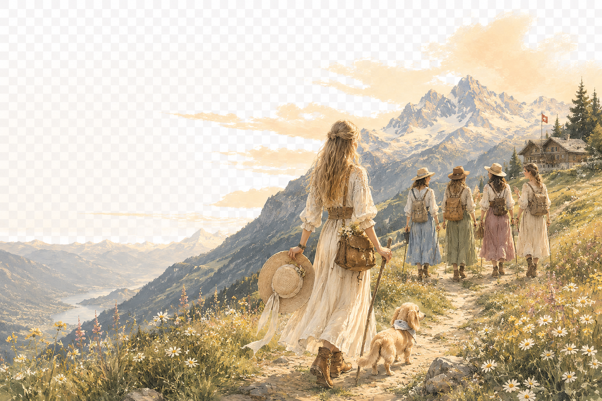
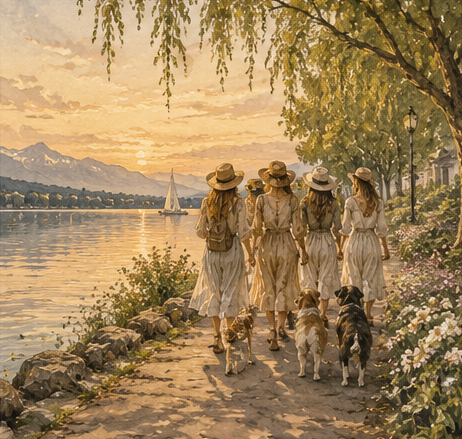
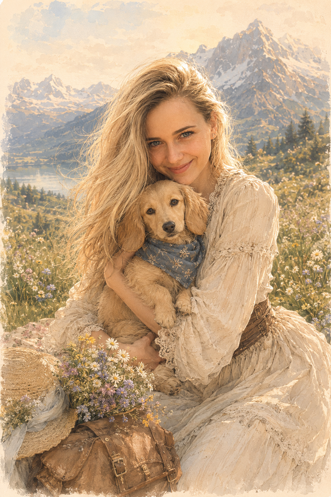
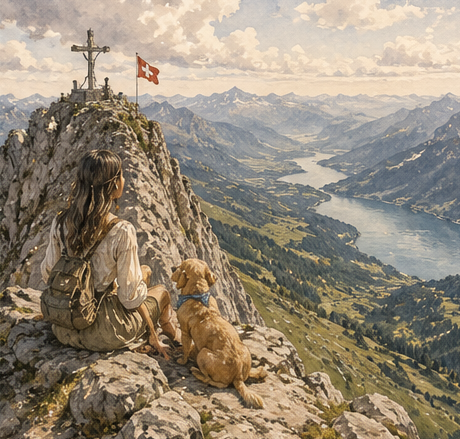
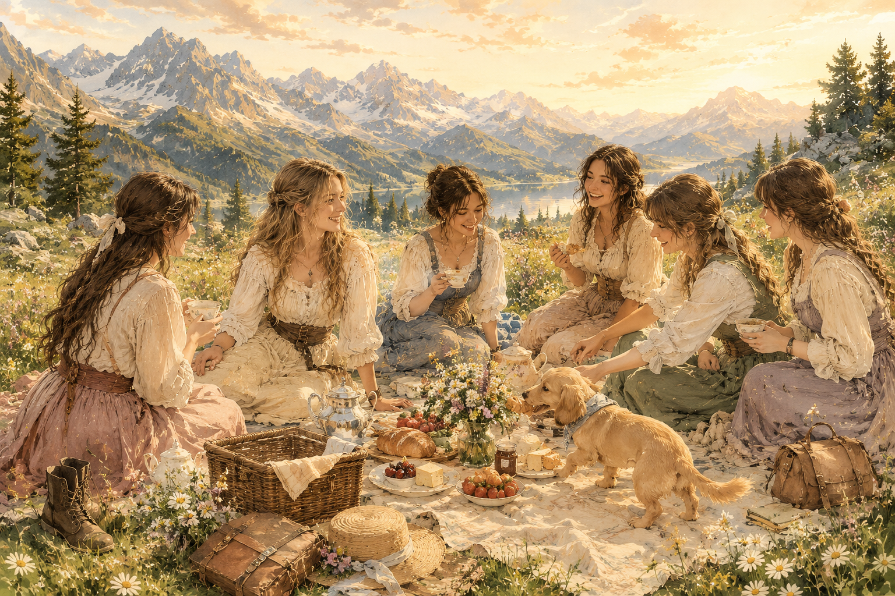
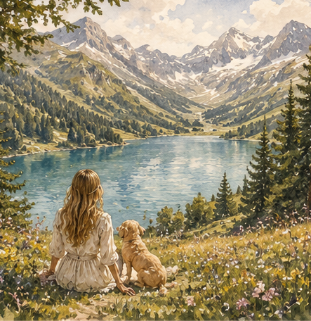
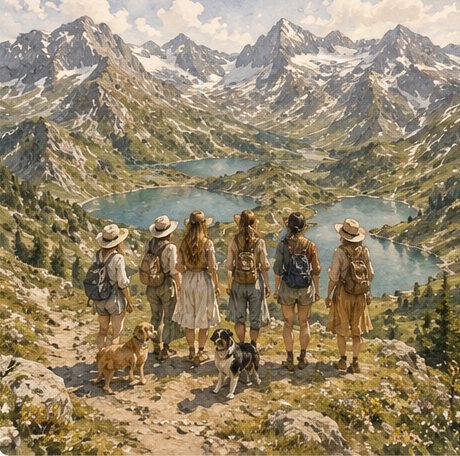

A launch-ready Instagram kit — the profile, a nine-post grid, four stories, highlight covers and every caption written and waiting. One steady voice: women, mountains and dogs.





Post them in this order. Painterly photographs and quiet cream cards alternate, so the grid reads like one calm picture — and the one dark card anchors the middle. Each caption is written and waiting below its post.
Swap the photo, the date or the question and these carry the whole week — a welcome, the next walk, a poll to pull people in, and a quiet quote.


Always start with the brand tags, then pull a few from place, community and the mood of the post. Keep it under fifteen so it reads clean.